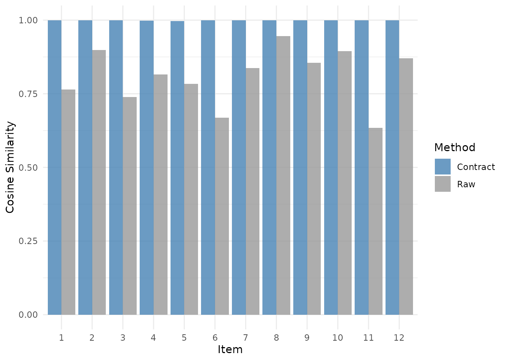

Latent Transforms for Template Similarity
latent-transforms.RmdWhy transforms?
template_similarity() compares density maps in raw
screen space. But when encoding and retrieval differ by a systematic
transform — different screen sizes, calibration drift between sessions,
participant-specific domain shifts, or contraction/distortion between
phases — raw correlation can underestimate true reinstatement.
eyesim supports two families of transform hooks before
similarity is computed:
- latent transforms such as PCA, CORAL, and CCA
- geometric transforms such as contraction and affine warps
You add them to template_similarity() with two
arguments; the core API stays unchanged.
A concrete example
Suppose retrieval is a contracted and shifted version of encoding.
That is a better match for a geometric transform than for a latent
covariance method, so we will use contract_transform() as
the running example:
set.seed(901)
make_gaussian_density <- function(mean = c(0, 0), cov = diag(c(0.2, 0.2)),
x = seq(-2, 2, length.out = 25),
y = seq(-2, 2, length.out = 25)) {
coords <- as.matrix(expand.grid(x = x, y = y))
inv_cov <- solve(cov)
centered <- sweep(coords, 2, mean, FUN = "-")
expo <- rowSums((centered %*% inv_cov) * centered)
z <- exp(-0.5 * expo)
z <- matrix(z, nrow = length(x), ncol = length(y))
z <- z / sum(z)
structure(
list(z = z, x = x, y = y, sigma = 1),
class = c("density", "eye_density")
)
}
ref_means <- replicate(12, runif(2, -0.8, 0.8), simplify = FALSE)
ref_cov <- matrix(c(0.18, 0.02, 0.02, 0.12), nrow = 2)
scale_true <- 0.72
shift_true <- c(0.18, -0.12)Now create a source set whose densities are shifted and expanded so that the best alignment is a global contraction plus translation:
ref_tab <- tibble(
id = seq_along(ref_means),
density = lapply(ref_means, function(mu) {
make_gaussian_density(mean = mu, cov = ref_cov)
})
)
source_tab <- tibble(
id = seq_along(ref_means),
density = lapply(ref_means, function(mu_ref) {
mu_src <- as.numeric((mu_ref - shift_true) / scale_true)
cov_src <- ref_cov / (scale_true^2)
make_gaussian_density(mean = mu_src, cov = cov_src)
})
)Comparing raw vs. in-sample contract alignment
Without any transform, the contraction distortion reduces similarity:
raw <- template_similarity(ref_tab, source_tab,
match_on = "id",
permutations = 0,
method = "cosine")
raw_mean <- mean(raw$eye_sim)
stopifnot(is.finite(raw_mean), nrow(raw) == nrow(ref_tab))
cat("Raw mean similarity:", round(raw_mean, 3), "\n")
#> Raw mean similarity: 0.809Now fit contract_transform() on the same matched rows
and compare the in-sample result:
contract_res <- template_similarity(
ref_tab, source_tab,
match_on = "id",
permutations = 0,
method = "cosine",
similarity_transform = contract_transform,
similarity_transform_args = list(shrink = 1e-6)
)
contract_mean <- mean(contract_res$eye_sim)
stopifnot(
is.finite(contract_mean),
nrow(contract_res) == nrow(ref_tab),
contract_mean > raw_mean
)
cat("Contract mean similarity:", round(contract_mean, 3), "\n")
#> Contract mean similarity: 0.999
Paired comparison of raw vs. contract-transformed similarity for each item. The geometric transform recovers higher similarity when the distortion is a global contraction plus translation.
The transform recovers substantially higher similarity because the simulated distortion matches the model. This example is intentionally fit and evaluated on the same rows, so it shows what the transform can recover, not a leakage-free effect estimate.
A CORAL-positive control
contract_transform() works above because the mismatch is
geometric in screen space. CORAL is a better fit when the shift is a
global linear distortion in the vectorized density representation
itself.
The next toy example is intentionally low-dimensional: each “density” is a 2 x 2 matrix, and the source domain is created by feature-wise scaling of the flattened density vector. That is exactly the kind of covariance mismatch that CORAL is designed to correct.
make_density_vec <- function(vec) {
structure(
list(
z = matrix(vec, nrow = 2, ncol = 2, byrow = TRUE),
x = 1:2,
y = 1:2,
sigma = 50
),
class = c("density", "eye_density")
)
}
set.seed(123)
n_coral <- 80
base_mat <- matrix(rnorm(n_coral * 4), nrow = n_coral, ncol = 4)
scale_mat <- diag(c(2, 0.6, 1.7, 0.8))
source_mat <- base_mat %*% scale_mat
coral_ref_tab <- tibble(
id = seq_len(n_coral),
density = lapply(seq_len(n_coral), function(i) make_density_vec(base_mat[i, ]))
)
coral_source_tab <- tibble(
id = seq_len(n_coral),
density = lapply(seq_len(n_coral), function(i) make_density_vec(source_mat[i, ]))
)
raw_coral <- template_similarity(
coral_ref_tab,
coral_source_tab,
match_on = "id",
permutations = 0,
method = "cosine"
)
coral_positive <- template_similarity(
coral_ref_tab,
coral_source_tab,
match_on = "id",
permutations = 0,
method = "cosine",
similarity_transform = coral_transform,
similarity_transform_args = list(comps = 4, shrink = 1e-6)
)
raw_coral_mean <- mean(raw_coral$eye_sim)
coral_positive_mean <- mean(coral_positive$eye_sim)
stopifnot(
is.finite(raw_coral_mean),
is.finite(coral_positive_mean),
coral_positive_mean > raw_coral_mean
)
cat("Raw CORAL toy mean similarity:", round(raw_coral_mean, 3), "\n")
#> Raw CORAL toy mean similarity: 0.928
cat("CORAL toy mean similarity:", round(coral_positive_mean, 3), "\n")
#> CORAL toy mean similarity: 0.996Here CORAL does help, because the source shift is an exact linear distortion in the representation that CORAL aligns. This is the right kind of positive control for CORAL. It is not a model of geometric screen-space warping, so it should not replace the contraction example above.
Leakage and double-dipping
This point matters for any learned transform.
If you call template_similarity() with
similarity_transform = ..., the transform is fit on the
same rows that are then scored. That is convenient and useful for
exploration, but it is not leakage-free. In other
words:
-
template_similarity(..., similarity_transform = NULL)is just a direct similarity computation and has no fitting-stage leakage issue. -
template_similarity(..., similarity_transform = coral_transform)fits the transform on the analysis rows themselves. Treat that as exploratory or transductive. -
template_similarity_cv(...)is the leakage-safe path. It fits the transform on training rows only and evaluates similarity on held-out rows.
So the rule is simple:
- use
template_similarity()for raw similarity, quick checks, and exploratory transform probes - use
template_similarity_cv()for any analysis you want to interpret out-of-sample
The key choice is the held-out unit. Split on the unit that could leak information across rows, such as participant, scene, or participant-scene key, not just arbitrary row numbers.
A leakage-free transform analysis
The held-out API mirrors template_similarity(), but it
cross-fits the transform internally:
contract_cv <- template_similarity_cv(
ref_tab,
source_tab,
match_on = "id",
split_on = "id",
n_folds = 4,
permutations = 0,
method = "cosine",
similarity_transform = contract_transform,
similarity_transform_args = list(shrink = 1e-6)
)
contract_cv_mean <- mean(contract_cv$eye_sim)
cv_info <- attr(contract_cv, "similarity_cv")
stopifnot(
is.finite(contract_cv_mean),
nrow(contract_cv) == nrow(ref_tab),
!is.null(cv_info),
length(cv_info$folds) == 4,
contract_cv_mean > raw_mean
)
cat("Held-out contract mean similarity:", round(contract_cv_mean, 3), "\n")
#> Held-out contract mean similarity: 0.999- held-out rows are assigned by
split_on - held-out
match_onkeys are excluded from transform fitting - the transform is fit on training rows only
- similarity is computed only on the held-out rows
That is the recommended workflow whenever transform fitting is part of the analysis rather than just a diagnostic.
In practice, use template_similarity_cv() whenever you
want to report a transform-based result as part of the substantive
analysis. Reserve
template_similarity(..., similarity_transform = ...) for
exploration, positive controls, and method development.
For retrieval-style analyses, you can also separate the rows used for
fitting and evaluation. For example, fit on positive-control
scene rows and evaluate on delay rows:
template_similarity_cv(
ref_tab,
source_tab,
match_on = "scene_id",
split_on = c("participant", "scene_id"),
similarity_transform = contract_transform,
similarity_transform_args = list(fit_by = "participant"),
fit_source_filter = function(tab) tab$phase == "scene",
eval_source_filter = function(tab) tab$phase == "delay",
method = "cosine"
)That pattern avoids learning the transform on the same delay rows you are trying to rescue.
Available transforms
| Transform | Supervised? | Best for |
|---|---|---|
latent_pca_transform() |
No | Dimensionality reduction, mild noise smoothing |
contract_transform() |
Yes (matched pairs) | Global contraction/expansion with translation |
affine_transform() |
Yes (matched pairs) | Linear geometric distortion, shear, anisotropic scaling |
coral_transform() |
No | Device/participant shifts (covariance-level differences) |
cca_transform() |
Yes (needs matched pairs) | Item-level alignment when pairings are reliable |
All are passed to template_similarity() via the
similarity_transform argument:
template_similarity(
ref_tab, source_tab,
match_on = "id",
similarity_transform = cca_transform,
similarity_transform_args = list(comps = 10, shrink = 0.01)
)Choosing a transform
- PCA is the safest default — dimensionality reduction with no assumptions about domain differences. Use when you want noise smoothing without domain adaptation.
- Contract is a good first geometric model when retrieval looks like a globally contracted or expanded version of encoding.
- Affine is the next step when distortion appears anisotropic or sheared rather than purely radial.
- CORAL is unsupervised and assumes linear, covariance-level differences between domains. Good for calibration drift or different screen sizes, but because it aligns distributions rather than matched pairs it is not guaranteed to increase per-item similarity on its own.
-
CCA is supervised and leverages matched pairs to
find shared latent axes. Set
compsmodestly (5–15) and addshrinkto stabilize small-N fits.
After the transform, template_similarity() still uses
your chosen method (cosine, pearson, fisherz, etc.) on the
transformed vectors.
Notes and limitations
- If a transform is fit and evaluated on the same rows via
template_similarity(), the result is exploratory. For leakage-free results, usetemplate_similarity_cv(). - Multiscale densities are supported only when all scales share the same grid size; otherwise latent transforms will error.
- Regularization (
shrink) and component count (comps) affect stability on small-N data — tune as needed. - CORAL and CCA are linear; they will not correct nonlinear spatial
warps.
contract_transform()andaffine_transform()help with simple geometric distortion, but not highly nonlinear warps. Keepcompslow to reduce overfitting, especially with few pairs. - See
vignette("eyesim")for the coretemplate_similarity()workflow without transforms.